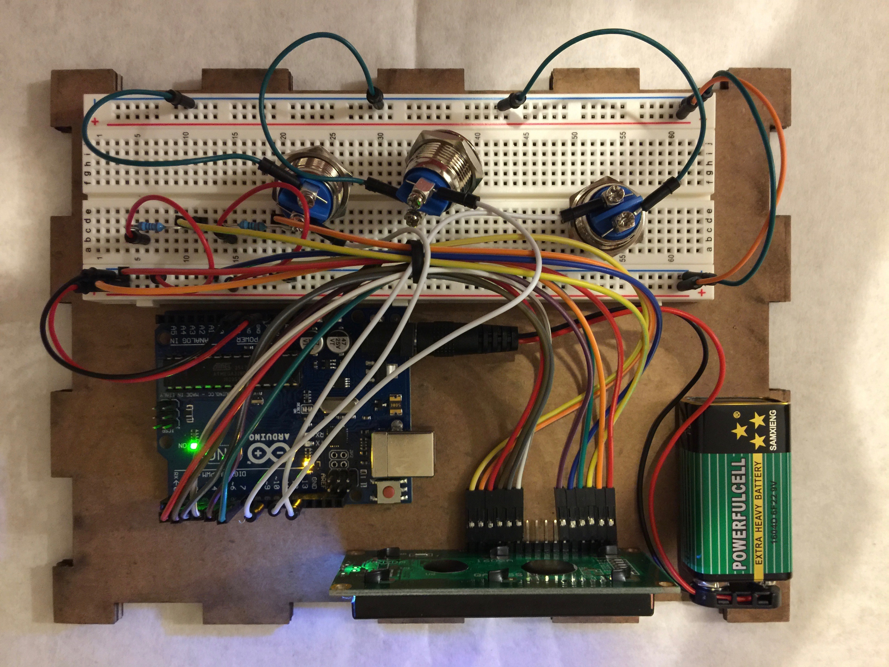

Steven Yong's Final Project!
Schematic

The concept of my final project is a Morse code teacher that teaches people letters in Morse code. I just wanted to create something as a tribute to a way of communication that's been forgotten since the invention of the telephone. Not many people know Morse code and it's kind of sad. Anyways, I had to be realistic so I decided to not use time in my Morse code teacher and used an enter button instead. I essentially used 0 as dot and 1 as dash, then checked to see if users entered the right combination.
My Morse code teacher is powered by a 9V battery and has an LCD screen, with one 220 ohm resistor for the brightness and a 1K ohm resistor for the contrast. There are three buttons: dot, dash, and enter. I originally planned on using buttons that I bought, but could not figure them out in time so I scaled back for the presentation. After figuring out that I needed to use INPUT_PULLUP, I went home and implemented the new buttons. Everything was working, but once I went to assemble everything, the LCD screen started displaying random characters and got progressively got worse from there. Due to time constraints, I was not able to diagnose what was wrong so I reverted back the tactile buttons again from the kit. I think some of the wires or the pins of the Arduino broke due to stress from when I was trying to fit everything into the box.
Circuit
This picture shows how cramped everything was, and this was actually my last iteration. The iteration before this was even shorter in height so that the users could poke inside to press the tactile buttons on the breadboard. As such, the connections of the wires and pins were being subjected to high stress.
Firmware
//Initializing the LCD library. #includeLiquidCrystal lcd(7, 6, 5, 4, 3, 2); //Creating strings of numbers to encode letters in Morse code. 0 is dot and 1 is dash. String A = "01"; String B = "1000"; String C = "1010"; String D = "100"; String E = "0"; String F = "0010"; String G = "110"; String H = "0000"; String I = "00"; String J = "0111"; String K = "101"; String L = "0100"; String M = "11"; String N = "10"; String O = "111"; String P = "0110"; String Q = "1101"; String R = "010"; String S = "000"; String T = "1"; String U = "001"; String V = "0001"; String W = "011"; String X = "1001"; String Y = "1011"; String Z = "1100"; String answersArray[26] = {A, B, C, D, E, F, G, H, I, J, K, L, M, N, O, P, Q, R, S, T, U, V, W, X, Y, Z}; //Creating an array of letters to use with the random function; this is to show the users. String lettersArray[26] = {"A", "B", "C", "D", "E", "F", "G", "H", "I", "J", "K", "L", "M", "N", "O", "P", "Q", "R", "S", "T", "U", "V", "W", "X", "Y", "Z"}; //Creating an array of letters to access the strings of answers. Will not be shown to users. int index = 0; //Create an int variable to use to select the index of the arrays. //Assigning the pins. int dotPin = 13; int dashPin = 11; int enterPin = 9; //Creating variables to evaluate the states of user input. int dotState = HIGH; int dashState = HIGH; int enterState = HIGH; String userInput = ""; //Creating an empty string to put user input into. String randomLetter = ""; //Creating an empty string to store to pass to from the random function. void setup() { Serial.begin(9600); //Initialize the serial monitor. //Initializing the pins to use the internal pullup resistors for the buttons. pinMode(dotPin, INPUT_PULLUP); pinMode(dashPin, INPUT_PULLUP); pinMode(enterPin, INPUT_PULLUP); lcd.begin(16, 2); //Initializing the LCD screen as a 16 by 2 display. randomSeed(analogRead(0)); //Seed so that the initial random is actually random. index = random(0,26); //Select a random number from 0 to 26. randomLetter = answersArray[index]; //Select the index of the answersArray using the number passed from the random function. lcd.print(lettersArray[index] + " in Morse code?"); //Display the question to the user. lcd.cursor(); //Show the cursor. lcd.setCursor(0, 2); //Set the cursor to the beginning of the second row (user input row). } void loop() { //Assign the states of the buttons using digitalRead. dotState = digitalRead(dotPin); dashState = digitalRead(dashPin); enterState = digitalRead(enterPin); //DOT & DASH BUTTONS if (dotState == LOW) { //If the dot button is pressed, then do this. userInput.concat("0"); //Concat 0 to the end of userInput to test with. if (userInput.length() < 5) { //If the length of userInput is less than 5, then do this. lcd.print(0); //Print 0 to show to the users. } else { //Else, do this. lcd.clear(); //Clear the LCD. lcd.print(lettersArray[index] + " in Morse code?"); //Display the same question again. lcd.setCursor(0, 2); //Set the cursor to the beginning of the second row (user input row). } delay(500); //Delay by 500 milliseconds. } else if (dashState == LOW) { //If the dash button is pressed, then do this. userInput.concat("1"); //Concat 1 to the end of userInput to test with. if (userInput.length() < 5) { //If the length of userInput is less than 5, then do this. lcd.print(1); //Print 1 to show to the users. } else { //Else do this. lcd.clear(); //Clear the LCD. lcd.print(lettersArray[index] + " in Morse code?"); //Display the same question again. lcd.setCursor(0, 2); //Set the cursor to the beginning of the second row (user input row). } delay(500); //Delay by 500 milliseconds. } //USER INPUT DISPLAY if (userInput.length() == 5) { //If the length of userInput is 5, then do this. userInput = ""; //Set userInput to an empty string. lcd.setCursor(0, 2); //Set the cursor to the beginning of the second row (user input row). } //ENTER BUTTON if (enterState == LOW) { //If the enter button is pressed, then do this. if (userInput.equals("")) { //If userInput is empty, then do this. index = random(0,26); //Select a random number from 0 to 26. randomLetter = answersArray[index]; //Select the index of the answersArray using the number passed from the random function. lcd.clear(); //Clear the LCD. lcd.print(lettersArray[index] + " in Morse code?"); //Display the question to the user. lcd.setCursor(0, 2); //Set the cursor to the beginning of the second row (user input row). } if (!userInput.equals("")){ //If userInput is not empty, then do this. if (userInput.equals(randomLetter)) { //If userInput is right (matches randomLetter), then do this. lcd.clear(); //Clear the LCD. lcd.print("You're right!"); //Print this and let user know they got the answer correct. lcd.setCursor(0, 2); //Set the cursor to the beginning of the second row (user input row). delay(1000); //Delay by 1 second. index = random(0,26); //Select a random number from 0 to 26. randomLetter = answersArray[index]; //Select the index of the answersArray using the number passed from the random function. lcd.clear(); //Clear the LCD. lcd.print(lettersArray[index] + " in Morse code?"); //Display the question to the user. lcd.setCursor(0, 2); //Set the cursor to the beginning of the second row (user input row). } else { //Else do this. lcd.clear(); //Clear the LCD. lcd.print("Try again."); //Print this and let the user know they got it wrong; have them try again. lcd.setCursor(0, 2); //Set the cursor to the beginning of the second row (user input row). } userInput = ""; //Set userInput to an empty string. delay(500); //Delay by 500 milliseconds. } } }
My code was simply a lot of logic based on if statements. I had problems initially because I used exclusively arrays, which proved to be difficult. I think arrays in Arduino, compared to something like Python was not as user-friendly or intuitive. I then switched to strings, which was way easier. Figuring out the LCD display, such as clearing it and setting the position of the cursor took some time to understand as well.
Circuit's Operation
So sadly I wasn't able to get footage of my Morse code teacher working with the new buttons because everything broke down. However, I still have it working with the tactile buttons from the kit. For next steps, I will diagnose what broke, then actually assemble everything into the box with the buttons I bought.